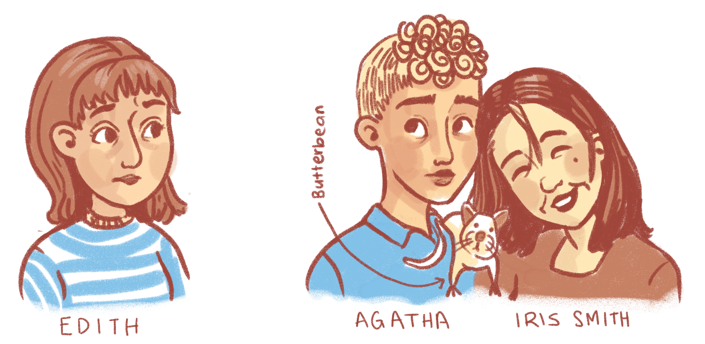

Ethical Decisions
Edith, Agatha and Iris Smith
I used to have a close friend, Edith. She had an ex called Agatha. Agatha and my friend Edith used to date but they split up after Edith lost interest and also because Agatha cheated on her with someone called Iris Smith. Agatha later moved to New Plymouth and found herself a new girlfriend, Iris (yes, Iris Smith). Agatha and Iris Smith bought a white rat together called Butterbean. Butterbean was extremely snuggly and was deeply loved by all. Agatha, Iris Smith, and Butterbean had been living together for three years.
However, for two of those three years, Agatha and my friend Edith had been sexting and sometimes doing a little more than sexting when Edith happened to drive through New Plymouth (which happened surprisingly often considering that it’s New Plymouth). Agatha told my friend Edith that she didn’t love Iris Smith and she was only staying with her because she didn’t want to lose custody of Butterbean. Agatha had half-heartedly tried to break up with Iris once but Iris talked her out of it and then went back to pretending like nothing was wrong. Agatha says that she would break up with Iris for real if my friend Edith proved her love by moving to New Plymouth.
Edith and I organized a group Airbnb to Masterton to celebrate both of our birthdays and Edith asked if she could invite Agatha and share a room with her in the house. Should I have I allowed Edith to bring Agatha and should I have said to both of them?
Compassion
- To my thinking at the time, not one of them was innocent with the exception of Butterbean, who was strictly an indoor rat and therefore had no ecological impact on our wildlife.
- I know that bad relationships form from communication ignorance, untreated mental health problems, and insecurity. All parties contribute to a relationship going sour and staying sour. While it is common for one person to hold more power, that person is often also suffering and acting from a place of pain. It goes against my beliefs to label one person as “the bad one” and they are all deserving of my respect.
- I also loved Edith to bits and didn’t want to damage my friendship with her. I wanted Edith to feel comfortable discussing the situation with me because I knew she didn’t have many people to talk to except for Agatha herself and she had lost a lot of self-esteem in the mess of it all. I also didn’t really know the others at all so it would be weird if I tried to meddle in their lives.
Honesty
- I had been in a bad relationship before and none of my friends expressed their opinion until after my ex and I had broken up. It was possible that no one had told Edith how messed up the whole thing was.
- Agatha held the most power in this situation and her actions were going unchecked. Edith did not want to tell Agatha how much the situation was hurting her but I could invite Agatha on the trip and let her know that she was being hurtful.
- Iris Smith had no idea that she was being cheated on. It had been happening for so long and she deserved to know.
Freedom (to make mistakes)
- By telling Iris Smith about the affair or by telling Agatha about how much she was hurting my friend, I would be taking autonomy away from all parties. I could end up creating an even more traumatic situation in the process
- It was also Edith’s birthday and maybe she should be allowed to make her own terrible decisions
In the end, I opted to let Edith invite whoever she wanted. I knew that saying no to the trip wouldn’t stop them from having an affair. I also decided it was fair to let Edith know my exact opinion on the whole scenario. I told her that she could do better and deserved someone who put her first and I also told her that her actions were putting Iris Smith into a hurtful situation as well. I was polite to Agatha when she turned up in Masterton but decided it was best not to say anything to her.
I sometimes worry that my responses to situations are conflict avoidant and I know a lot of people would probably have acted in a more drastic way than I did. But I am happy that I’m the type of person who at least says something in an uncomfortable situation.